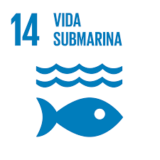

En K'AAK'NÁAB somos un proyecto y equipo comprometido con
la sostenibilidad, el cuidado del medio ambiente y la conservación de los
océanos y cuerpos de agua, alineados con el Objetivo 14 (Vida Submarina) de
la Agenda 2030. Nacimos con el propósito de enfrentar la
contaminación causada por residuos y plásticos convocando a la comunidad a
jornadas de limpieza, además de recolectar, clasificar y reutilizar desechos
para darles una segunda vida útil y proteger la vida submarina.

A través del reciclaje y la reutilización de materiales, transformamos los
residuos recolectados en artículos útiles y sostenibles —como mochilas,
lapiceras, sillas, escritorios o juegos reciclados— que se ofrecen a
precios accesibles para escuelas públicas, con alianzas como la Secretaría
de Educación Pública (SEP), para apoyar a niños que lo necesiten.
Nuestro trabajo se impulsa mediante campañas de concientización, talleres
educativos, donaciones, patrocinios, apoyos gubernamentales, venta de
productos reciclados y la cooperación de ECOLAF para pagos
iniciales.

Creemos en el trabajo en equipo, el consumo responsable y la participación
activa como vías para construir un futuro más limpio y saludable para las
próximas generaciones. Con nuestro lema "Queremos dejar
un mundo mejor", buscamos educar a la población, fortalecer la
conciencia ambiental y avanzar de forma constante hacia la recuperación y
conservación de nuestros ecosistemas acuáticos.